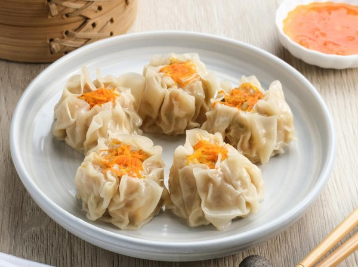

Delicious Dimsum Recipe

Dimsum
Dim sum is a traditional Chinese meal made up of small plates of dumplings and other snack dishes and is usually accompanied by tea. Similar to the way that the Spanish eat tapas, the dishes are shared among family and friends. Typically dim sum is consumed during brunch hours — late morning to lunchtime.
Ingredients
- 1 pound ground pork
- 1 large onion, chopped
- ½ bunch cilantro, chopped
- ½ teaspoon crushed red pepper flakes
- 2 teaspoons red curry paste
Steps
- Combine pork, onion, cilantro, red pepper flakes, red curry paste, garam masala, chili powder, onion powder, and garlic powder in a bowl; mix well and set aside.
- Place flour into a separate bowl. Slowly stir in water as needed until a soft dough is achieved; some water may be left over. Roll out walnut-sized balls of dough into thin circles for wrappers.
- Fill each wrapper with about 1 tablespoon pork mixture. Moisten the edges of wrapper, then fold in half, sealing to create a half-moon shape. Repeat with remaining wrappers and filling.
- Place dumplings in a steamer over 1-inch boiling water and cover. Steam until dough becomes glossy, about 10 minutes.
- Combine peanut butter, cayenne pepper, sugar, and vegetable oil in a microwave-safe glass or ceramic bowl. Cook in the microwave on high for 30 seconds; stir. Serve with dumplings.